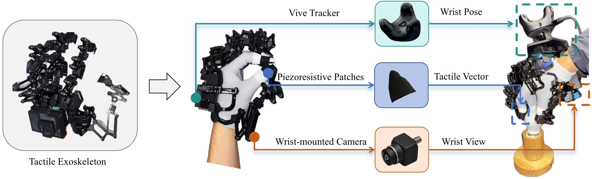
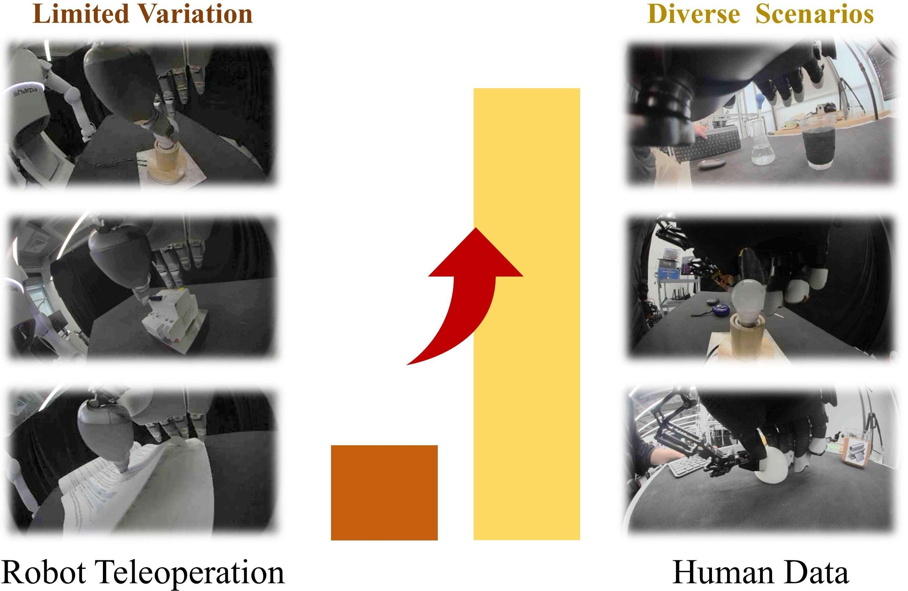
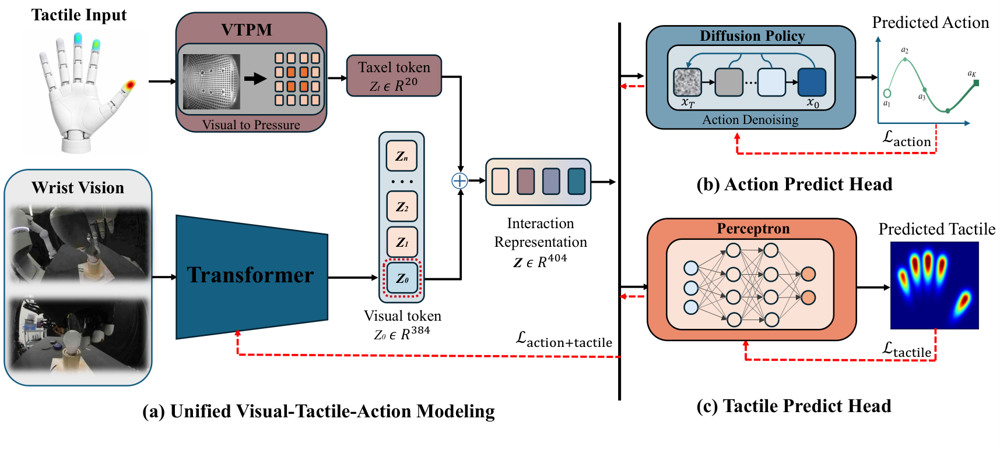

摘要
灵巧操作需要触觉反馈。然而，操作者在遥控灵巧手时只能获得有限的触觉反馈，难以扩大机器人触觉示教的规模。采集人类示教更容易扩展，也能覆盖多种触觉交互。手的形态可以变化，交互依循的物理规律相通。基于这一点，我们使用人类触觉数据改善灵巧操作策略。首先，我们构建了一套触觉动作捕捉系统，同步记录画面、触觉信号与手部运动。利用这套系统，我们构建了覆盖五项富接触任务的 UVTA 数据集。每项任务包含 1,000 条覆盖多种交互模式的人类示教，以及 150 条机器人示教。 为把人类交互中的物理信息迁移到机器人控制，我们提出统一视觉—触觉—动作模型。模型将人手和机器人手的数据映射到对齐的触觉与动作表征，并联合预测后续的动作和触觉轨迹。联合训练目标让人类示教为接触感知表征学习提供监督，部署时只执行机器人动作。在五项真机任务上，我们的方法平均成功率为 70%，高于最强视触觉基线的 29% 及架构消融方案的 42%。增加人类示教后，性能持续改善，每任务达到 1,000 条时仍未饱和，验证了可规模化的真人触觉数据对灵巧操作的有效性。 项目页面见 https://uni-vta.github.io/。
Dexterous manipulation requires tactile feedback. However, robot tactile demonstrations are difficult to scale because dexterous-hand teleoperation provides limited tactile feedback to the operator. In contrast, human demonstrations offer a substantially more scalable source of diverse tactile interactions. Motivated by a simple premise— hands can change, but the underlying physics of interaction does not —we leverage human tactile data to improve dexterous manipulation policies. Specifically, we first build a tactile motion-capture system that synchronously records images, tactile signals, and hand motions. Using this system, we construct the UVTA dataset spanning five contact-rich tasks, with 1,000 human demonstrations covering diverse interaction patterns and 150 robot demonstrations per task. To transfer the underlying physics of human interaction to robot control, we propose a Unified Visual-Tactile-Action Model that maps both embodiments into aligned tactile and action representations and jointly predicts future action and tactile trajectories. The joint objective enables human demonstrations to supervise contact-aware representation learning, while only robot actions are executed during deployment. In real-robot evaluations across five tasks, our method achieves an average success rate of 70%, outperforming the strongest visual-tactile baseline, which achieves 29%, and an architecture ablation, which achieves 42%. Performance improves consistently with additional human demonstrations and exhibits no saturation at 1,000 demonstrations per task, validating the effectiveness of scalable human tactile data for dexterous manipulation. Project page is available at https://uni-vta.github.io/ .
I 引言
触觉反馈对于灵巧操作至关重要。以接触为关键的任务依赖于接触起始点、压力、形变及滑移等物理状态，而这些状态在视觉观察中往往难以明确或被遮蔽。对这些状态的掌握使得更精准、更快速的反应式操作成为可能 [1, 2, 3, 4, 5]。然而，学习触觉策略通常需要通过灵巧机器人手遥操作来收集数据。此类数据难以大规模获取：操作高维度手形机器人十分困难，而传统界面提供的触觉反馈又有限。因此，收集同步的视觉、触觉及动作轨迹过程成本高昂，限制了机器人数据集中所包含的物体、环境及接触模式种类的多样性。
Tactile feedback is indispensable for dexterous manipulation. Contact-rich tasks depend on contact onset, pressure, deformation, and slip—physical states that are often ambiguous or occluded in visual observations. Access to these states has enabled increasingly precise and reactive manipulation [ 1 , 2 , 3 , 4 , 5 ] . Nevertheless, learning tactile policies typically requires demonstrations collected through dexterous robot-hand teleoperation. Such data are difficult to scale: teleoperating a high-dimensional hand is demanding, and conventional interfaces provide the operator with limited tactile feedback. Consequently, collecting synchronized visual, tactile, and action trajectories remains costly, constraining the diversity of objects, environments, and contact patterns represented in robot datasets.
人类示范提供了更可扩展的多种物理交互来源。大规模人类视频有助于视觉表征学习及长视距机器人控制 [6, 7, 8, 9, 10]，而动作重建、目标重定位以及人与机器人协同训练中的行为迁移则能更直接地实现本体感知 [11, 12, 13, 14, 15, 16]。然而，人类与机器人手在形态、运动学、感知布局及动作空间方面存在差异，因此直接的运动对应并不可靠。此外，仅依靠视频无法完全捕捉决定操作成功性的局部接触动态。因此，我们试图通过一种比本体特定运动更为基础的方式来传递人类交互经验。 我们的核心假设是，手的形式可以变化，但交互的底层物理机制保持不变：尽管不同形态的本体之间存在差异，但接触形成、变形、滑动、释放以及物体响应仍保留着共同的物理结构。
Human demonstrations provide a substantially more scalable source of diverse physical interactions. Large-scale human video has supported visual representation learning and long-horizon robot control [ 6 , 7 , 8 , 9 , 10 ] , while motion reconstruction, retargeting, and human–robot co-training transfer human behavior more directly [ 11 , 12 , 13 , 14 , 15 , 16 ] . However, human and robot hands differ in morphology, kinematics, sensing layouts, and action spaces, making direct motion correspondence unreliable. Moreover, video alone does not fully capture the local contact dynamics that determine manipulation success. We therefore seek to transfer human interaction experience through a quantity that is more fundamental than embodiment-specific motion. Our central premise is that hands can change, but the underlying physics of interaction does not : although embodiments differ, contact formation, deformation, slip, release, and object response retain shared physical structure.
为了大规模捕捉这种结构，我们首先开发了一种可穿戴触觉运动捕捉系统，该系统能够同步记录以手腕为中心的图像、指尖触觉数据以及手部运动。随后，我们利用该系统在五次高接触任务中构建 UVTA 数据集。每个任务都包含 1,000 类人类演示，涵盖多种交互模式，以及 150 类机器人演示。这种组合方式既体现了人类交互的多样性与可扩展性，又满足了机器人执行所需的特定本体感知监督机制。
To capture this structure at scale, we first develop a wearable tactile motion-capture system that synchronously records wrist-centric images, fingertip tactile measurements, and hand motion. We then use the system to construct the UVTA dataset over five contact-rich tasks. Each task contains 1,000 human demonstrations that cover diverse interaction patterns and 150 robot demonstrations. This composition combines the diversity and scalability of human interaction with the embodiment-specific supervision required for robot execution.
基于该数据集，我们提出了一种统一的视觉-触觉-动作模型，该模型能够将人类与机器人的行为轨迹转化为一致的触觉与动作表示。该模型通过结合预测未来的动作与触觉轨迹，利用人类示范数据来监督与接触相关的表示学习过程，而在实际运行时仅执行机器人动作。对触觉结果的预测将运动与其物理后果联系起来，从而在多个本体中提供统一的学习信号 [17, 18, 19, 20, 21, 22, 23, 24, 25, 26, 27, 28, 29]。在五项真实机器人任务中，我们的方法实现了平均成功率为 70%，其中 29% 对应最强的视觉-触觉基础模型，而 42% 则对应被移除关键模块的架构。随着人类示范数据的增加，性能持续提升，且每个任务下的示范数量达到 1,000 时仍不会出现饱和现象。 这些结果表明，可扩展的人类触觉数据能够显著提升富含接触的灵巧操作能力。
Building on this dataset, we propose a Unified Visual-Tactile-Action Model that maps human and robot trajectories into aligned tactile and action representations. The model jointly predicts future action and tactile trajectories, using human demonstrations to supervise contact-aware representation learning while executing only robot actions at deployment. Predicting tactile outcomes connects motion to its physical consequences, providing a shared learning signal across embodiments [ 17 , 18 , 19 , 20 , 21 , 22 , 23 , 24 , 25 , 26 , 27 , 28 , 29 ] . Across five real-robot tasks, our method achieves a 70% average success rate, compared with 29% for the strongest visual-tactile baseline and 42% for the ablated architecture. Performance continues to improve as the number of human demonstrations increases, with no saturation at 1,000 demonstrations per task. These results demonstrate that scalable human tactile data can substantially improve contact-rich dexterous manipulation.
我们的主要贡献包含三个方面：
Our main contributions are threefold:
- •
我们开发了一种可穿戴触觉运动捕捉系统，该系统能够同步采集视觉观测数据、指尖触觉测量数据以及手部运动数据，而无需通过机器人遥操作。
We develop a wearable tactile motion-capture system that synchronously captures visual observations, fingertip tactile measurements, and hand motion without requiring robot teleoperation.
- •
我们介绍了 UVTA 数据集，该数据集包含五个具有丰富接触行为的任务，每个任务均包含 1,000 多种人类演示及 150 机器人演示。
We introduce the UVTA dataset, comprising five contact-rich tasks with 1,000 diverse human demonstrations and 150 robot demonstrations per task.
- •
我们提出了一种统一的视觉-触觉-动作模型，该模型能够在不同本体之间传递基于接触信息的物理表征。真实的机器人实验及规模扩展研究验证了该模型的性能，以及其利用更多人类触觉数据的能力。
We propose a unified visual-tactile-action model that transfers contact-aware physical representations across embodiments. Real-robot experiments and scaling studies validate both its performance and its ability to benefit from increasing amounts of human tactile data.

图 2：触觉运动捕捉系统概述。该被动式触觉外骨骼能够捕捉手部运动与触觉信号。该集成系统还包含 VIVE 跟踪器以及腕部安装的 RGB 相机，分别用于捕捉腕部姿态和以腕部为中心的图像。该相机与 VIVE 跟踪器均按照 Sharpa Wave 腕部框架进行校准。

图 3：数据集概览。每个任务包含在有限变化条件下收集的 150 机器人演示，以及具有多种场景和接触模式的 1,000 人类演示。

图 4：我们统一视觉-触觉-动作模型的概述。VTPM将视觉-触觉输入转换为 20 -D 压阻型 taxel token，而Transformer则提取出 384 -D 视觉 token。这两个 tokens 被串联成统一的 404 -D 交互表示，并传递给扩散动作头与触觉回归头。动作损失和触觉损失分别监督各自的预测头，而其联合目标则优化共享的Transformer，以学习出统一的、考虑触觉的视觉表示。
II 相关工作
从人类数据中学习的人工智能机器人。大规模以自我为中心的数据集能够捕捉任务、物体及环境层面的多样化人类交互行为 [6, 7, 30, 31]。这种经验被用于学习可复用的视觉表征与潜在规划，以用于后续的机器人控制 [8, 9, 32, 33, 10]；同时，另一研究方向通过姿态重建、动作重定位、便携式动作捕捉或人机联合训练，实现人类运动行为的传递 [11, 12, 13, 14, 15, 16, 34]。尽管这些方法大幅降低了机器人示范的需求，但直接策略迁移仍依赖于可恢复的人类运动或对齐后的动作表征。预测性方法则采用不受本体影响的交互结果作为监督信号 [25]。我们的研究同时从人类与机器人的示范数据中预测动作及未来的触觉轨迹。 人类行为为训练监督提供贡献，但不被视为机器人指令；部署阶段仅选择机器人动作预测结果，而对应的动作与接触动力学则共同构成了共享的跨本体表示。
Robot Learning from Human Data. Large-scale egocentric datasets capture diverse human interactions across tasks, objects, and environments [ 6 , 7 , 30 , 31 ] . This experience has been used to learn reusable visual representations and latent plans for downstream robot control [ 8 , 9 , 32 , 33 , 10 ] , while a complementary line transfers human motor behavior through pose reconstruction, action retargeting, portable motion capture, or human–robot co-training [ 11 , 12 , 13 , 14 , 15 , 16 , 34 ] . Although these methods substantially reduce the demand for robot demonstrations, direct policy transfer still relies on recoverable human motion or an aligned action representation. Predictive approaches instead use embodiment-invariant interaction outcomes as supervision [ 25 ] . Our work jointly predicts action and future tactile trajectories from both human and robot demonstrations. Human actions contribute training supervision but are not treated as robot commands; deployment selects only robot-action predictions, while paired action–touch dynamics provide the shared cross-embodiment representation.
用于灵巧操作的手感学习。触觉能够揭示在视觉中可能模糊或被遮蔽的接触、力、滑动及变形信息，从而在接触丰富的任务中实现闭环灵巧操作 [35, 36, 1, 2, 3]。除了任务特定的控制外，触觉表征还通过机器人游戏、隐藏的多模态目标、大量未标注的手感数据以及异构传感器数据得以学习 [37, 38, 39, 40, 41]。策略级系统进一步结合视觉与触觉，用于双手或多手指操作、高频反应式控制以及基于物理原理的 vision-language-action学习 [42, 28, 43, 44, 29]。最近的扩展研究引入了触觉中期训练以及以人类为中心的触觉预训练方法 [4, 5]。然而，现有系统主要依赖机器人自身的触觉进行学习，或通过分阶段训练并调整人类与机器人动作空间来转移人类触觉经验。 我们采用共同训练的方式，让人类触觉运动捕捉系统与机器人操作轨迹在相同的动作及未来触觉目标下协同学习。这种耦合机制使得两种本体都能参与视觉表示的构建，同时保留机器人特有的执行方式。
Tactile Learning for Dexterous Manipulation. Touch reveals contact, force, slip, and deformation that may be ambiguous or occluded in vision, enabling closed-loop dexterity in contact-rich tasks [ 35 , 36 , 1 , 2 , 3 ] . Beyond task-specific control, tactile representations have been learned from robotic play, masked multimodal objectives, large unlabeled tactile corpora, and heterogeneous sensor data [ 37 , 38 , 39 , 40 , 41 ] . Policy-level systems further combine vision and touch for bimanual or multifingered manipulation, high-frequency reactive control, and physically grounded vision-language-action learning [ 42 , 28 , 43 , 44 , 29 ] . Recent scaling efforts introduce tactile mid-training and human-centric tactile pre-training [ 4 , 5 ] . Nevertheless, existing systems predominantly learn from robot touch or transfer human touch through staged training with aligned human–robot action spaces. We instead co-train human tactile motion-capture and robot teleoperation trajectories with the same action and future-tactile objectives. Their coupling lets both embodiments shape the visual representation, while deployment retains robot-specific execution.
机器人学习的世界模型。世界模型通过预测未来观测结果或潜在状态，并将这些预测与规划或动作生成相结合，从而支持机器人学习 [45, 46, 47, 48, 17, 18, 19]。近期系统将未来视频或特征预测直接整合到通用策略中，并共同建模视觉动态与动作 [20, 21, 22]。通过将这一范式应用于异构机器人及人类视频，便形成了能够跨任务与本体传递物理知识的世界动作模型 [23, 24, 25]。然而，大多数此类模型仅预测视觉未来，此时接触开始、力值及局部变形难以被清晰观测。触觉预测则提供了一种互补的世界建模目标，从预测局部触觉观测到生成触觉子目标及多模态交互动态 [37, 26, 27, 29, 5]。 我们的模型能够联合预测人类与机器人交互过程中的触觉及动作轨迹，并将物理后果与产生这些行为的动作相耦合。在实际部署过程中，仅执行机器人行为的预测结果。
World Models for Robot Learning. World models support robot learning by predicting future observations or latent states and coupling these predictions to planning or action generation [ 45 , 46 , 47 , 48 , 17 , 18 , 19 ] . Recent systems integrate future-video or future-feature prediction directly into generalist policies and jointly model visual dynamics and actions [ 20 , 21 , 22 ] . Scaling this paradigm with heterogeneous robot and human videos has produced world action models that transfer physical knowledge across tasks and embodiments [ 23 , 24 , 25 ] . However, most such models predict visual futures, in which contact onset, force, and local deformation are only weakly observable. Tactile prediction offers a complementary world-modeling target, from anticipating local touch observations to generating tactile subgoals and multimodal interaction dynamics [ 37 , 26 , 27 , 29 , 5 ] . Our model jointly predicts future tactile and action trajectories from both human and robot interactions, coupling physical consequences with the motions that produce them. At deployment, only the robot-action predictions are executed.